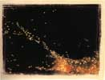
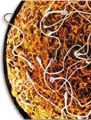
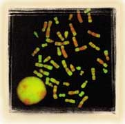
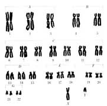
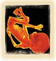
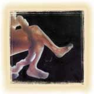
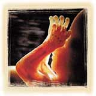
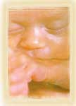
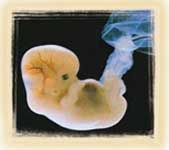

ÝNSANIN DOÐUMU
Kuran'da insanlar imana çaðýrýlýrken oldukça farklý konulardan bahsedilir. Allah, kimi zaman gökleri, kimi zaman yeryüzünü, bazen hayvanlarý ve bitkileri insana delil gösterir. Yine birçok ayette insanýn bizzat kendi yaratýlýþýna dönüp bakmasý öðütlenir. Ýnsanýn nasýl yeryüzüne geldiði, hangi aþamalardan geçtiði ve temel maddesinin ne olduðu sýk sýk hatýrlatýlýr. Örneðin bir ayette þöyle denir:
Ýnsanýn yaratýlýþý ve bunun mucizevi özelliði, daha pek çok ayette vurgulanýr. Ancak bu vurgular arasýnda öyle bilgiler vardýr ki, bunlar 7. yüzyýlda yaþayan insanlarýn asla bilemeyeceði detaylardýr. Ýþte bunlardan bazýlarý:“Sizleri Biz yarattýk, yine de tasdik etmeyecek misiniz? Þimdi (rahimlere) dökmekte olduðunuz meniyi gördünüz mü? Onu sizler mi yaratýyorsunuz, yoksa yaratýcý Biz miyiz?„ (Vakýa Suresi, 57-59)
1) Ýnsan, meni sývýsýnýn
tamamýndan deðil, aksine çok küçük bir parçasýndan (spermadan) yaratýlýr.
2) Bebeðin cinsiyetini erkek belirler.
3) Ýnsan embriyosu ana rahmine adeta bir sülük gibi
yapýþýr.
4) Ýnsan ana rahminde üç karanlýk bölge içinde
geliþir.
Kuran'ýn indirildiði yüzyýlda
da insanlar elbette doðumun temel maddesinin cinsel iliþki sonrasýnda
erkekten gelen meni ile ilgili olduðunu biliyorlardý. Çocuðun ortalama 9
ayda doðduðu da rahatlýkla gözlemlenen, bilmek için araþtýrma
gerektirmeyen bir konu idi. Ancak yukarýda sýraladýðýmýz bilgiler o devrin
insanýnýn bilgi seviyesinin çok üstündeydi. Bunlar, ancak 20. yüzyýl
bilimi tarafýndan keþfedildi.
Þimdi bu bilgileri sýrasýyla inceleyelim.
MENÝDEN BÝR DAMLA
 Yukarýdaki resimde rahime dökülen meni görülmektedir. Erkekten atýlan 250 milyon kadar spermden çok az bir miktarý yumurtaya ulaþmayý baþarýr. Yumurtayý dölleyecek olansa sað kalmayý baþaran 1000 kadar spermden sadece bir tanesidir. Ýnsanýn bütün meniden deðil, meninin içindeki çok küçük bir parçadan oluþtuðu, Kuran'daki "akýtýlan meniden bir damla su" tanýmlamasý ile haber verilmiþtir. |
Meniden Bir Damla
Cinsel birleþme sýrasýnda erkekten bir kerede ortalama 250 milyon sperm atýlýr. Spermler yumurtaya varana kadar annenin vücudunda zorlu bir yolculuk geçirirler. Bu yolculukta 250 milyon spermin ancak bin kadarý yumurtaya ulaþmayý baþarýr. Beþ dakika sonra sona erecek yarýþýn sonunda yarým tuz tanesi büyüklüðündeki yumurta, spermlerden yalnýzca birini kabul edecektir. Yani insanýn özü, meninin tamamý deðil, ondan küçük bir parçadýr. Kuran'da bu gerçek þöyle açýklanmýþtýr: “Ýnsan, ‘kendi baþýna ve sorumsuz' býrakýlacaðýný mý sanýyor? Kendisi, akýtýlan meniden bir damla su deðil miydi?„Dikkat edilirse Kuran'da, insanýn meninin tamamýndan deðil, onun içinden alýnan küçük bir parçadan yapýldýðý haber verilmektedir! Bu ifadedeki özel vurgunun, ancak modern bilim tarafýndan keþfedilen bir gerçeði açýklamasý ise, ifadenin Ýlahi kaynaklý bir bilgi olduðunun delilidir. |
MENÝDEKÝ KARIÞIM
Menideki Karýþým
Meni olarak adlandýrýlan ve spermleri taþýyan
besleyici sývý, sadece spermlerden oluþmaz. Aksine meni, birbirinden farklý
sývýlarýn karýþýmýndan oluþur. Bu sývýlarýn, spermin gerek duyduðu
enerjiyi karþýlayacak olan þekeri bulundurmak, baz özelliðiyle ana rahminin
giriþindeki asitleri nötralize etmek, spermin hareket edeceði kaygan ortamý
saðlamak gibi görevleri vardýr.
Ne ilginçtir ki, Kuran'da meniden söz edilirken, modern bilimin ortaya çýkardýðý bu gerçeðe de iþaret edilmekte ve meni "karmakarýþýk" bir sývý olarak tarif edilmektedir:
Bir baþka ayette ise yine meninin karýþým olduðuna iþaret edilir, insanýn ise bu karýþýmýn "özünden" yaratýldýðý vurgulanýr:“Þüphesiz Biz insaný, karmaþýk olan bir damla sudan yarattýk. Onu deniyoruz. Bundan dolayý onu iþiten ve gören yaptýk.„ (Ýnsan Suresi, 2)
Burada "öz" diye çevrilen Arapça "sulala" kelimesi, öz ya da bir þeyin en iyi kýsmý demektir. Hangi þekilde alýnýrsa alýnsýn "bir bütünün bir kýsmý" anlamýna gelir. Bu durum, Kuran'ýn, insanýn yaratýlýþýný en ince detayýna kadar bilen bir Ýrade'nin sözü olduðunu açýkça göstermektedir. Bu Ýrade, insaný yaratmýþ olan Allah'a aittir.“O, yarattýðý herþeyi en güzel yapan ve insaný yaratmaya bir çamurdan baþlayandýr. Sonra onun soyunu bir özden, basbayaðý bir sudan yapmýþtýr.„ (Secde Suresi, 7-8)

BEBEÐÝN CÝNSÝYETÝ
Bebeðin Cinsiyeti
Yakýn bir zamana kadar, insanlar, bebeðin
cinsiyetinin anne hücreleri tarafýndan belirlendiðini sanýyorlardý. Ya da
en azýndan, anne ve babadan gelen hücrelerin birlikte cinsiyet belirledikleri
zannediliyordu. Ancak Kuran'da bu konuda farklý bir bilgi verilmiþ ve erkeklik
ve diþiliðin, "rahime dökülen meniden" yaratýldýðý bildirilmiþtir:
Kuran'da verilen bu bilginin doðruluðu, genetik ve mikrobiyoloji bilimlerinin geliþmesiyle birlikte bilimsel olarak da ispatlandý. Cinsiyetin tümüyle erkekten gelen sperm hücreleri tarafýndan belirlendiði, kadýnýn ise bu iþte hiçbir rolünün olmadýðý anlaþýldý.“Rahime dökülen meniden erkek ve diþi iki çifti O yarattý...„ (Necm Suresi, 45-46)
Cinsiyet belirlenmesindeki etken, kromozomlardýr. Ýnsan yapýsýný belirleyen 46 kromozomdan iki tanesi cinsiyet kromozomu olarak adlandýrýlýr. Bu iki kromozom erkekte XY, kadýnda ise XX olarak tanýmlanýr. Bunun sebebi söz konusu kromozomlarýn bu harflere benzemesidir. Y kromozomu erkeklik, X kromozomu ise kadýnlýk genlerini taþýr.
Bir insanýn oluþmasý,
erkek ve kadýnda çiftler halinde yer alan bu kromozomlarýn birer tanesinin
birleþmesi ile baþlar. Kadýnda yumurtlama sýrasýnda ikiye ayrýlan eþey hücresinin
her iki parçasý da X kromozomu taþýr. Oysa erkekte ikiye ayrýlan eþey hücresi,
X ve Y kromozomlarý içeren iki farklý sperm meydana getirir. Kadýnda bulunan
X kromozomu, eðer erkekteki X kromozomunu içeren spermle birleþirse doðacak
bebek kýz olacaktýr. Eðer Y kromozomu içeren spermle birleþirse, bu kez doðacak
çocuk erkek olur.
Yani doðacak çocuðun cinsiyeti, erkekteki
kromozomlardan hangisinin kadýnýn yumurtasýyla birleþeceðine baðlýdýr.
Kuþkusuz genetik bilimi ortaya çýkýncaya dek, yani 20. yüzyýla kadar bunlarýn hiçbiri bilinmiyordu. Aksine pek çok kültürde, doðacak çocuðun cinsiyetinin kadýn bedeni tarafýndan belirlendiði inancý yaygýndý. Hatta bu nedenle kýz çocuk doðuran kadýnlar kýnanýrdý.
Oysa Kuran'da, insanlara
genlerin keþfinden 13 yüzyýl önce bu batýl inanýþý reddeden bir bilgi
verilmiþ, cinsiyetin kökeninin kadýn deðil, erkekten gelen meni olduðu
bildirilmiþtir.
|
 |
X kromozomu diþilik, Y kromozomu ise erkeklik özelliklerini taþýr. Anne yumurtasýnda yalnýzca diþi cinsiyeti belirleyen X kromozomu bulunur. Babadan gelen menide ise hem X hem de Y kromozomu taþýyan spermler bulunur. Dolayýsýyla bebeðin cinsiyeti annenin yumurtasýný dölleyen spermin X ya da Y kromozomu taþýmasýna baðlýdýr. Yani ayette belirtildiði gibi bebeðin cinsiyetini belirleyen etken, babadan gelen menidir. Kuran'ýn indirildiði asýrda kesinlikle bilinemeyecek olan bu bilgi, Kuran'ýn Allah sözü olduðunu kanýtlayan delillerden biridir. |
 |
RAHME ASILIP
TUTULAN ALAK
| Rahime Asýlýp
Tutunan “Alak"
Kuran'ýn insanýn oluþumu hakkýnda verdiði bilgileri incelemeye devam ettiðimizde, yine çok önemli bazý bilimsel mucizelerle karþýlaþýrýz. Erkekten gelen sperm ve kadýndaki yumurta birleþtiðinde, doðacak bebeðin ilk özü de oluþmuþ olur. Biyolojide "zigot" olarak tanýmlanan bu tek hücre, hiç zaman yitirmeden bölünerek çoðalacak ve giderek küçük bir "et parçasý" haline gelecektir. Ancak zigot bu büyümesini boþlukta gerçekleþtirmez. Rahim duvarýna asýlýp tutunur. Sahip olduðu uzantýlar sayesinde topraða yerleþen kökler gibi, buraya yapýþýr. Bu bað sayesinde de, geliþimi için ihtiyaç duyduðu maddeleri annenin vücudundan emebilir. Ýþte burada çok önemli bir Kuran mucizesi ortaya çýkmaktadýr. Allah Kuran'da, anne rahmine tutunarak geliþmeye baþlayan zigottan söz ederken, "alak" kelimesini kullanmaktadýr: “Yaratan Rabbin adýyla oku. O, insaný bir "alak"tan yarattý. Oku, Rabbin en büyük kerem sahibidir.„"Alak" kelimesinin Arapça'daki anlamý ise, "bir yere asýlýp tutunan þey" demektir. Hatta kelime asýl olarak deriye yapýþarak oradan kan emen sülükler için kullanýlýr. Kuþkusuz, anne karnýnda geliþmekte olan zigotu bu özelliðiyle tarif eden bir kelime kullanýlmasý, Kuran'ýn Alemlerin Rabbi olan Allah tarafýndan indirildiðini bir kez daha ispatlamaktadýr. |
Anne karnýndaki bebek, geliþiminin ilk aþamasýnda annesinin kanýndan beslenebilmek için rahim duvarýna yapýþýp tutunan bir zigot halindedir. Yukarýdaki resimde bir et parçasý görünümüde olan zigot görülmektedir. Modern embriyolojinin tespit ettiði bu oluþum Kuran'da, "asýlýp tutunan" anlamýna gelen, deriye yapýþýp kan emen sülükler için de kullanýlan "alak" kelimesiyle 14 yüzyýl önceden mucizevi bir biçimde bildirilmiþtir. |
KEMÝKLERÝN KASLA SARILMASI
Kemiklerin Kasla Sarýlmasý
Kuran ayetlerinde haber verilen bir diðer önemli
bilgi ise, insanýn anne rahmindeki oluþum aþamalarýdýr. Ayetlerde, anne
karnýnda önce kemiklerin oluþtuðu, daha sonra ise kaslarýn ortaya çýkarak
bu kemikleri sardýðý haber verilmektedir:
Anne karnýndaki geliþimi inceleyen bilim dalý embriyolojidir. Ve embriyoloji alanýnda, yakýn zamana kadar kemiklerle kaslarýn birlikte ortaya çýkarak geliþtikleri sanýlmýþtýr. Bu yüzden bazý kimseler uzun bir süre bu ayetlerin bilime ters düþtüðünü iddia etmiþtir. Ancak geliþen teknoloji sayesinde yapýlan daha ileri mikroskobik incelemeler, Kuran'da bildirilenlerin eksiksiz bir þekilde doðru olduðunu ortaya koymuþtur.“Sonra o su damlasýný bir alak (hücre topluluðu) olarak yarattýk; ardýndan o alak'ý bir çiðnem et parçasý olarak yarattýk; daha sonra o çiðnem et parçasýný kemik olarak yarattýk; böylece kemiklere de et giydirdik; sonra bir baþka yaratýþla onu inþa ettik. Yaratýcýlarýn en güzeli olan Allah, ne yücedir.„ (Müminun Suresi, 14)
| Bu
mikroskobik incelemeler göstermektedir ki, anne karnýnda, tam ayetlerde
tarif edildiði gibi bir geliþme gerçekleþir. Önce embriyodaki kýkýrdak
doku kemikleþir. Daha sonra ise kas hücreleri kemiklerin etrafýndaki
dokudan seçilerek biraraya gelir ve bu kemikleri sarar. Bu durum,
"Developing Human" yani "Geliþen Ýnsan" adlý
bilimsel bir yayýnda þöyle tarif edilmektedir:
6. haftada kýkýrdaklaþmanýn devamý olarak ilk kemikleþme köprücük kemiðinde ortaya çýkar. 7. hafta sonunda uzun kemiklerde de kemikleþme baþlamýþtýr. Kemikler oluþmaya devam ederken kas hücreleri kemiði çevreleyen dokudan seçilerek kas kitlesini meydana getirirler. Kas dokusu bu þekilde kemiðin etrafýnda ön ve arka kas gruplarýna ayrýþýr.17 |
 Anne karnýndaki geliþimini tamamlayan bebeðin kemikleri belli bir dönem sonra kaslarla sarýlmaktadýr. |
Kýsacasý insanýn
Kuran'da tarif edilen oluþum aþamalarý, modern embriyolojinin bulgularýyla
tam bir uyum içindedir.
|
 |
|
 |
BEBEKLERÝN RAHÝMDE ÜÇ EVRESÝ
Bebeðin Rahimdeki Üç Evresi
Kuran'da insanýn anne karnýnda üç aþamalý bir
yaratýlýþla yaratýldýðý bildirilmektedir:
Dikkat edilirse, ayette, insanýn anne karnýnda, birinden diðerine farklýlaþan üç ayrý evrede meydana geldiðine iþaret edilmektedir.“... Sizi annelerinizin karýnlarýnda, üç karanlýk içinde, bir yaratýlýþtan sonra (bir baþka) yaratýlýþa (dönüþtürüp) yaratmaktadýr. Ýþte Rabbiniz olan Allah budur, mülk O'nundur. O'ndan baþka ilah yoktur. Buna raðmen nasýl çevriliyorsunuz?„ (Zümer Suresi, 6)
Gerçekten de bugün
modern biyoloji, bebeðin anne karnýndaki embriyolojik geliþiminin üç farklý
devrede gerçekleþtiðini ortaya koymuþtur. Bugün týp fakültelerinde ders
kitabý olarak okutulan bütün embriyoloji kitaplarýnda bu konu en temel
bilgiler arasýnda yer alýr. Örneðin, embriyoloji hakkýnda temel baþvuru
kitaplarýndan biri olan "Basic Human Embryology" isimli kaynakta bu
gerçek þöyle ifade edilmektedir:
Rahimdeki hayat 3 EVREDEN oluþur; preembriyonik (ilk
2,5 hafta), embriyonik (8. haftanýn sonuna kadar), ve fetal (8. haftadan doðuma
kadar).
Týp dilinde "trimester" yani "üç dönem" olarak da tanýmlanan bu evreler bebeðin farklý geliþim aþamalarýný içerir. Bu üç geliþim safhasýnýn belli baþlý özellikleri kýsaca þöyledir:
- Preembriyonik evre:
Yaygýn olarak "1. trimester" olarak anýlan
bu ilk evrede zigot bölünerek çoðalýr, bir hücre kitlesi haline geldikten
sonra kendini rahim duvarýna gömer. Hücreler çoðalmaya devam ederken 3
tabaka halinde organize olurlar.
- Embriyonik evre:
"2. trimester" olarak da tanýmlanan ikinci
evre toplam 5,5 hafta sürer ve bu süre boyunca canlý "embriyo"
olarak adlandýrýlýr. Bu evrede hücre tabakalarýndan bedenin temel organ ve
sistemleri ortaya çýkar.
- Fetal evre:
Gebeliðin "3. trimesteri" olarak adlandýrýlan
döneme girildiðinde embriyo artýk "fetus" diye adlandýrýlýr. Bu
dönem gebeliðin sekizinci haftasýndan itibaren baþlar ve doðuma dek sürer.
Bir önceki dönemden ayýrt edici özelliði fetusun yüzü, elleri ve ayaklarýyla
belirgin, insan dýþ görünümüne sahip bir canlý olmasýdýr. Dönemin baþýnda
3 cm. boyunda olmasýna raðmen tüm organlarý ortaya çýkmýþtýr. Bu dönem
30 hafta kadar sürer ve geliþme doðum haftasýna kadar devam eder.
Anne rahmindeki geliþim
ile ilgili bu bilgiler, ancak modern teknolojik aletlerle yapýlan gözlemler
sayesinde elde edilmiþtir. Ancak görüldüðü gibi bu bilgiler de, diðer pek
çok bilimsel gerçek gibi, mucizevi bir biçimde Kuran ayetlerinde haber
verilmiþtir. Ýnsanlýðýn týbbi konularda hiçbir detaylý bilgiye sahip
olmadýðý bir dönemde, Kuran'da bu derece ayrýntýlý ve doðru bilgiler
verilmiþ olmasý, elbette Kuran'ýn insan sözü deðil, Allah Kelamý olduðunun
açýk bir delilidir.
|
 |
Zümer Suresi'nin 6. ayetinde insanýn anne karnýnda, birinden diðerine farklýlaþan üç ayrý evrede meydana geldiðine iþaret edilmektedir. Gerçekten de bugün modern embriyoloji bilimi, bebeðin anne karnýndaki embriyolojik geliþiminin üç farklý devrede gerçekleþtiðini ortaya koymuþtur. |
 |